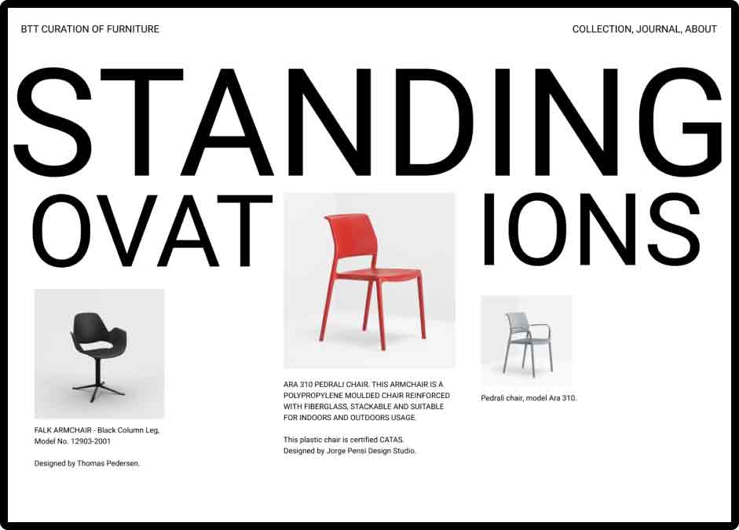

Designing a furniture
curation.
⭮ Prev. Case

Next Case ➜
Chairs designed to withstand the test of time, through thick and thin, rough conditions and still be standing on their one or many legs, definately deserves standing ovations. This case study will showcase of I designed an curation of furniture.
This is one of the many different projects I have been working on in the vector graphics editor tool Figma. I wanted to design a website that exhibits products, but I figured that a full on E-Com website is a larger task than what I had in mind.
Oxford Languages defines a curation as "the action or process of selecting, organizing, and looking after the items in a collection or exhibition." With that said, this case study examines how I designed the curation of furniture, "Standing Ovations".
1. Designing the desktop view.
I began the design process with the homepage depicted in the picture below (1.). I wanted the name of the curation to represent the purpose of the website and the appreciation of the selected items exhibited. Thereafter I started with wireframing and creating an early prototype in Figma. I designed the website top-to-bottom, with a made-up company name "BTT", and a super simple navigation system in the top right. Next, I tried to find a way to creatively display the title of the curation whilst simultaneously letting the furniture items be in the center of attention. My idea was to let the product divide the title, and give the design some depth by the impression that the item is being embraced by the title behind it.
I had all the data, additional images, materials and dimensions of the products on their respective websites. As for the Pedrali chair, I decided to divide the product information into three different sections, a general section which is displayed per default when the user first views the item, a section about its dimensions and lastly a materials section.
1.

2.

2. Designing the mobile view.
After designing the homepage and selected item view in desktop, I decided to design for the mobile user. I chose to design the list of currently exhibited items on the website (1.) and the interface after interacting with the list (2.).
I wanted to strive towards designing a intuitive collection list and a simple solution to achieving this is by not fully displaying an even number of items in the list, the user immidiately and innately realize that the list is scrollable and most likely contains more items than what is currently visable and partly-visable (1.).
Designing the interface of a selected item consisted of; displaying the name and information about the product, figuring out the best way to portray the product, and sectioning the description and other detailed text elements into different sections. By doing so I aim to let the user recognize structure and consequently helping them navigate and find their desired information about the product with ease (2.).
1.

2.

3. What I learned, Mistakes and what would I do differently.
This design project was definately not thorough and thoughtful, instead simply just a design challenge I wanted to try and complete. This was one of the first design projects where I got the slightest aqcuainted with E-com and product interfaces, thus every design choice and decision I made is simply an assumption of what I thinks works best or looks the best.
Since I finished this project, I completed the courses: Business Benefits Of Design, User-Centered Design and Agile Methods at my university. And I now understand that UX-research is such an incredibly vital part of design. If I were to redo the project I would strive towards making informed design desicions, and to achieve this I would work in an iterative design cycle like Lean-UX with 1. Think, 2. Make and 3. Test as the three cycle points to iterate between. The testing section would consist of surveys, usability Testing or other forms of quantitative or qualitative methods of gathering information to help me make informed decisions.